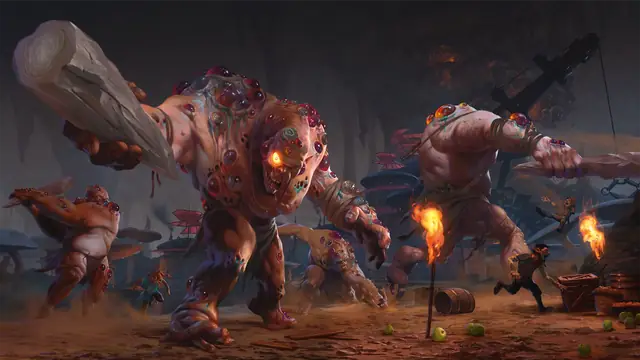

Фомор
Fomorian
Огромный Великан, Хаотичный Злой

Класс Защиты 14 Инициатива +0 (10)
Хиты 172 (15к12 + 75)
Скорость 40 футов
| мод | спас | ||
|---|---|---|---|
| СИЛ | 23 | +6 | +6 |
| ЛОВ | 10 | +0 | +0 |
| ТЕЛ | 20 | +5 | +5 |
| мод | спас | ||
|---|---|---|---|
| ИНТ | 9 | −1 | −1 |
| МДР | 14 | +2 | +2 |
| ХАР | 6 | −2 | −2 |
Чувства Тёмное зрение 120 футов, пассивное Восприятие 18
Языки Великаний, Подземный
Опасность 8 (3 900 опыта; БВ +3)
Действия
Мультиатака. Фомор совершает две атаки Каменной дубиной. Он может заменить одну из этих атак использованием Извращающего сглаза, если тот доступен
Каменная дубина. Бросок рукопашной атаки: +9, досягаемость 15 фт. Попадание: 24 (4к8 + 6) Дробящего урона.
Извращающий сглаз (Перезарядка 4–6). Спасбросок Мудрости: Сл 16, одно видимое фомором существо в 120 футах. Провал: 21 (6к6) Психического урона, и цель получает 1 уровень Истощения. Успех: Только половина урона.
Бонус мастерства +3
Среда обитания Подземье
Сокровища Любые
Фомор
Проклятый великан Тьмы
Фоморы — это великаны, некогда славившиеся магическими способностями, но поражённые фейским проклятием. В своей гордыне они позволили обманом завлечь себя в Страну Фей, чтобы завладеть её магией. Когда тамошние архифеи объединились, фоморов отбросили назад и прокляли сверхъестественным уродством, дабы их тела уподобились их гнусным душам. С тех пор фоморы обитают в Подземье, среди руин своих волшебных городов. Проклятие архифей не оставляет их и поныне, терзая блуждающими язвами, вываливающимися органами и ещё более странными недомоганиями. Вместо того чтобы искупить свои злодеяния, фоморы обращают магию собственного проклятия против других.
Совершите бросок по таблице «Извращения фомора» для вдохновения или определите сами внешние проявления, которым подвергается существо, попавшее под действие Извращающего сглаза фомора.
Извращения фомора
| 1к4 | Сглаз фомора проявляется как… |
| 1 | Разноцветные блуждающие гнойники. |
| 2 | Обильный пот жидкостями всех цветов радуги. |
| 3 | Клоки извивающихся волос. |
| 4 | Вены, взбухающие и перекатывающиеся под кожей. |